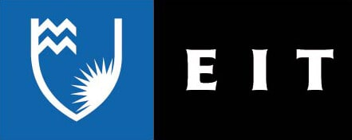

The Project
This website was originally developed by Cameron Wood for an IT Essentials Media Design and Development assignment. It has been modified and repurposed by Nuclear Pasta for an Agile Projects assignment.
To structure and plan our project development processes, we have followed multiple paradigms / methods of software development. These include the RAD (Rapid Action Development) and Kanban board methods.
RAD (Rapid Action Development)
This is the primary methodology that our team structured our The Kardashev Scale project around. We chose to follow the RAD model because it was designed for software projects like ours, in which existing code can be used to streamline the implementation process. Having less time allocated to building a system allows a team to focus more on reviewing and refining software until clients are satisfied with the design. An advantage of applying the RAD methodology for Nuclear Pasta was that it enabled us to revise and iterate upon our design in a way that a more linear paradigm like the Waterfall method wouldn't.
Kanban Board
Nuclear Pasta have created a Trello board with cards for each phase of the development process, divided into lists of completed, in-progress, and to-do tasks. This system helps us keep track of what tasks are to be completed, their due dates, and which team member is assigned to each. We originally adopted Trello to make use of its BigPicture Gantt chart feature, but have since shifted to an Excel sheet to develop our Gantt chart for reasons of convenience. The Kanban method was useful for delegating tasks early on when both team members were present but became less relevant when the project became a solo one and delegation was no longer possible.
Product Comparison
Kardashev Scale Wiki
Similarities:
- The main topic of website is the Kardashev Scale and it explains how each civilization level is classified
- Like our website, the Kardashev Scale Wiki makes references to science-fiction, e.g., Star Trek
- The Kardashev Scale Wiki discusses categories of civilizations specific to the extended Kardashev scale (Type 4+)
- Being a public wiki, this website allows anybody to create or edit articles
Futurism
Similarities:
- Futurism's content largely concerns the technological and societal development of humankind
- The purpose of the website is to inform readers of factual science and theoretical concepts supported by studies
- The Futurism website features a newsletter and subscription functionality
- Many scientific topics and events are covered on this website, not only the Kardashev Scale
- The visual design of this site features a wider spectrum of colours than ours
Daily Galaxy
Similarities:
- Daily Galaxy's content is highly focused on scientific research, with much emphasis on astronomy, space, and the possibility of extraterrestrial life
- The website's visual design features astronomy elements, a banner image of space for example
- The Daily Galaxy website features a newsletter and subscription functionality
- Articles on this website are written on a variety of subjects, not limited to the Kardashev scale and categorising civilizations based on technological advancement
- The navigation bar is oriented horizontally, rather than vertically
- The design of this website is more simplistic than ours, with its white background and use of whitespace
- Being a news site, The Daily Galaxy is regularly updated